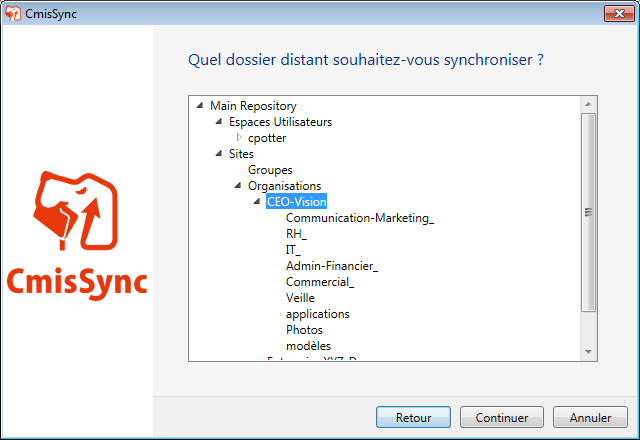
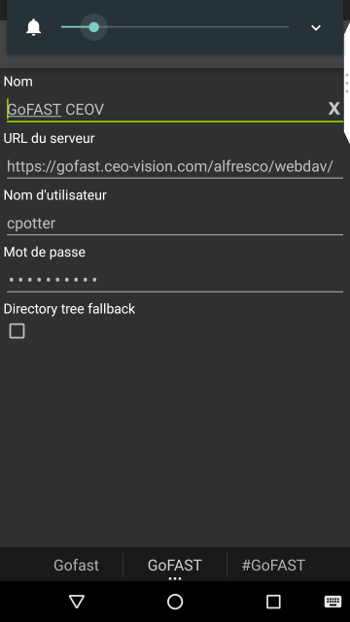
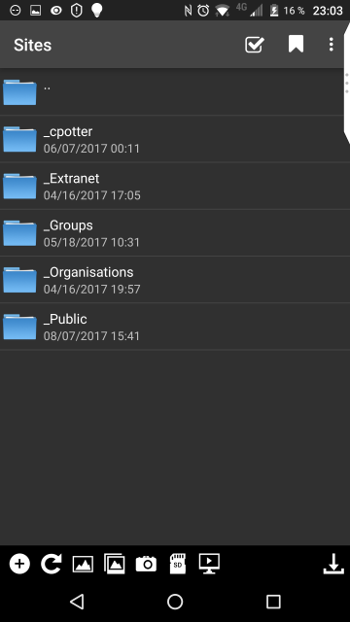
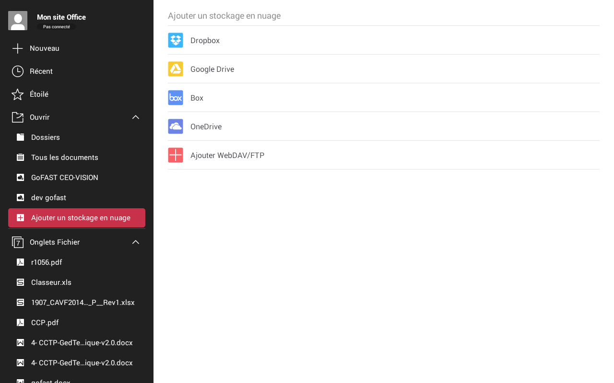
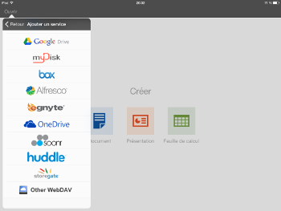
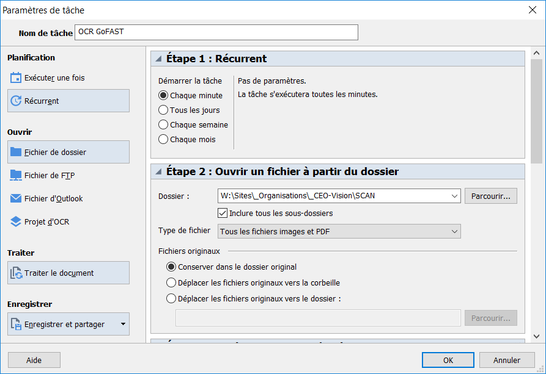
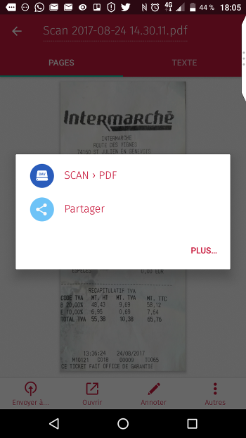
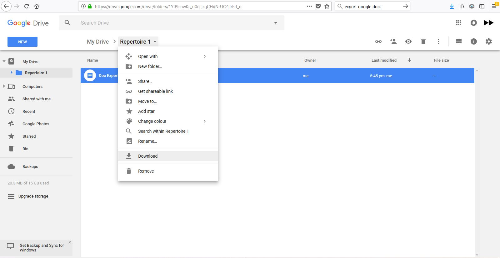

GoFAST : Utilisation Avancée¶
Introduction¶
Ce document a pour but de donner les instructions de configuration de logiciels tiers fonctionnant avec la plate-forme GoFAST.
Ces outils complémentaires permettent :
- Travailler en mobilité
- Travailler sans réseau (en mode « déconnecté » type DropBox)
- L’accès à GoFAST sur les terminaux mobiles (tablettes,…) par explorateur de fichiers
- La visualisation et/ou l’édition en ligne de documents Office sur tablette
- La messagerie instantanée (« chat ») sur mobile
- La vidéoconférence sur mobile (dans navigateur)
- Des outils de dématérialisation (smartphone, copieur, …)
- Des outils de signature
Synchronisation locale (GoFAST hors-ligne)¶
CMISSync est un outil puissant et fiable qui permet une synchronisation sur un PC d’un ou plusieurs espaces collaboratifs de la GoFAST.
Si vous n’avez plus de réseau (par exemple dans l’avion), les fichiers de la GoFAST sont accessibles sur le disque dur de votre ordinateur et vous pouvez quand même travailler avec.
Si vous les modifiez ils seront directement synchronisés une fois le réseau disponible.
Installation CMISSync¶
L’outil est disponible pour Windows, Mac (beta) et Linux et peut être téléchargé ici : https://bitbucket.org/aegif/cmissync/downloads
La version actuelle Windows recommandée* est la 2.9.4.0 ou 2.11.3.0 (en cours de tests)
Voici les étapes pour configurer l’outil (myorg est à remplacer par le nom de votre organisation)
L’adresse à utiliser : https://gofast.**myorg**.com/alfresco/api/-default-/public/cmis/versions/1.1/atom

A cette étape il est possible de choisir l’espace collaboratif que l’on souhaite synchroniser. Bien sûr si cet espace collaboratif contient des sous-espaces ceux-ci sont synchronisés et donc le volume de données à la 1ère synchronisation peut être très important. Compter par exemple 30 minutes de synchronisation pour 1700 fichiers / 1.2 Go.
Si vous voulez donc tout synchroniser, choisir l’espace ‘racine’, ici ‘Main Repository’

Une fois configuré il est possible de faire plusieurs actions comme ouvrir le dossier local de synchronisation, mettre en pause la synchronisation ou changer les paramètres.

Important
Dans les paramètres il est possible de baisser la fréquence de synchronisation, option utile si CMISSync est largement diffusé dans l’organisation ceci pouvant charger la plateforme GoFAST. En effet CMISSync consomme de la bande passante coté serveur et du CPU

Utilisation¶
Lorsque l’ordinateur est connecté au réseau, CMISSync vérifie périodiquement si des documents ont été changés sur la plateforme GoFAST. Si les documents ont été modifiés, ils sont copiés localement (sur le PC).
Note
si vous faites des modifications en mode déconnecté (offline), lors de la reconnexion sur le serveur GoFAST, votre version sera téléchargée et versionnée sauf si un utilisateur a fait des modifications entre-temps sur la GoFAST. Dans ce cas une « gestion des conflits » se déclenche (voir ci dessous)
Exemple de notification (version anglaise)
1) UserA et UserB ont le fichier courrier.doc synchronisé sur leur poste
2) UserA et UserB se déconnectent (offline), et chacun édite courrier.doc en local
3) UserA redevient connecté (online). CmisSync télécharge la version de UserA de courrier.doc sur le serveur GoFAST (qui versionne automatiquement)
4) UserB redevient connecté. CmisSync essaie de télécharger la version de UserB de courrier.doc sur le serveur GoFAST, mais constate que le fichier a déjà été modifié par UserA
5) Sur le PC de UserB, CmisSync renomme la version de UserB courrier.doc en courrier.doc_UserB-version et télécharge courrier.doc de UserA sur le PC
- UserB a maintenant 2 versions, et doit faire une des 3 actions:
- Garder la version de UserA : Effacer courrier.doc_UserB-version
b. Garder la version de UserB : Effacer courrier.doc (UserA) et retirer le suffix de courrier.doc_UserB-version è dans ce cas la version de B va être écrasée sur le serveur GoFAST après versionnage
c. Fusionner les 2 versions dans courrier.doc, puis effacer courrier.doc_UserB-version
Danger
si vous effacez un répertoire en local dans l’arborescence synchronisée, les répertoires distants seront supprimés. Par mesure de précaution, il est préférable d’éviter de supprimer un répertoire en local dans l’arborescence synchronisée. GoFAST ne supprime pas définitivement les documents mais une procédure de « republication » doit être faite
Accès aux fichiers GoFAST sur Tablette et Smartphone¶
Il est possible d’accéder à la plateforme GoFAST à partir de tablettes Android (ex. GalaxyTab), iOS (iPAD) et smartphones (Android, iOS, Blackberry).
Pour cela vous devez installer le logiciel gratuit « Webdav Navigator Lite » sur iTunes, GooglePlay ou Blackberry AppWorld. A noter qu’une version payante incluant la synchronisation locale est disponible sous le nom « Webdav Navigator »

Vous aurez ensuite la possibilité d’accéder à vos fichiers GoFAST sur votre smartphone :

Le site de l’éditeur se trouve à l’adresse suivante : http://seanashton.net/webdav/
Éditer des fichiers Office sur Tablette¶
Tablette Android¶
Pour ce type de tablette nous recommandons d’utiliser la suite Office « WPS Office » disponible sur GooglePlay.
Vous pourrez configurer un espace de stockage directement sur la GoFAST par « Ouvrir/Ajouter un stockage en nuage » puis choisir « Webdav » et entrer l’adresse « https://gofast.mycomp.com/alfresco/webdav » ou vous devez remplacer mycomp.com par le domaine de votre organisation.

L’application va vous demander ensuite votre identifiant et mot de passe sur la GoFAST.
Il est ensuite possible d’ouvrir un document directement sur la GoFAST. Certaines polices de caractère n’existent pas sous Android, la mise en page peut être différente de celle sous PC.
La sauvegarde peut de même changer légèrement la mise en page.
Important
Lorsqu’on sauvegarde le document, celui-ci est d’abord sauvegardé en local sur la tablette. Une fois que l’application est fermée (X), la synchronisation est effectuée avec GoFAST
Tablette iPad¶
Si vous souhaitez uniquement consulter les documents Office, nous vous conseillons également « WPS Office ».
Néanmoins il existe actuellement une limitation sur la version iPad pour sauvegarder un document qui a été ouvert sur la GoFAST il est nécessaire de reparcourir tout l’espace de stockage ce qui n’est pas très pratique. L’éditeur est notifié de ce bug et un correctif devrait être produit.
Dans l’attente de ce correctif, il est possible d’utiliser la suite « Citrix ShareFile QuickEdit » 

Messagerie instantanée (« chat ») sur mobiles¶
Avec GoFAST vous avez une messagerie instantanée privée et sécurisée, équivalent de « WhatsApp » pour votre Organisation, fonctionnant sur le standard ouvert XMPP.
Vous pouvez donc utiliser une application pour votre téléphone suivant ce standard. Par exemple :
- Android : Xabber, Kandru (gratuit), Conversations (payant), Astrachat
- iOS : Chatsecure, AstraChat
Pour configurer ces clients il suffit d’entrer dans la gestion des comptes :
Identifiant : identifiant_gofast@gofast-comm.xxxxx.yyy
Signature électronique des PDF¶
GoFAST permet d’ouvrir un PDF avec Foxit Reader (ou Acrobat), d’y apposer une signature et de sauvegarder le PDF signé directement sur la plateforme GoFAST.
Note
Vous devez avoir installé “ITHitEditDocumentOpener”
Vous pouvez alors choisir dans le menu ‘Editer en ligne’. Ceci ouvrira l’application installée sur votre poste (Acrobat Reader, Foxit, …). Vous pouvez alors signer avec une signature manuscrite ou un certificat électronique puis sauvegarder directement sur GoFAST avec versionning.

Caution
Si vous utilisez Acrobat Reader, l’application doit être déjà fermée avant de lancer l’édition en ligne
Dématérialiser vers GoFAST¶
Il est possible de créer un dossier permettant de déposer des PDF “Images” et que ceux-ci soient transformés en PDF “Interrogeables” grace à un logiciel commercial de reconnaissance de caractères (OCR) installé sur le PC, “ABBYY Hot Folder” (ABBYY FineReader). Vous pouvez ainsi numériser des factures et qu’elles soient transformées en PDF Intérrogeable pour qu’elles soient facilement retrouvables sur GoFAST.


Dématérialiser à partir d’un smartphone¶
Il est possible de dématérialiser par exemple des notes de frais directement à partir d’un smartphone et de les envoyer directement dans GoFAST.

Pour cela vous devez avoir installé :
- CamScanner et “Webdav Navigator” ou
- Scanbot
Nous parlerons ici de la configuration de Scanbot dont l’utilisation est simplifiée.


Dématérialiser à partir d’un copieur multi-fonction¶
Pour ceci votre copieur doit posséder un connecteur webdavs. Nous contacter pour plus de précisions
Reprise de contenus vers GoFAST¶
Reprise des contenus GoogleDocs/Drive¶
Dans le cas de migration d’un entrepot Google vers GoFAST, suivre la procédure suivante:
Google vous propose de télécharger une archive au format “zip” avec les contenus convertis au format MS-Office.

Vous pouvez à présent décompresser l’archive directement dans l’arborescence dans GoFAST